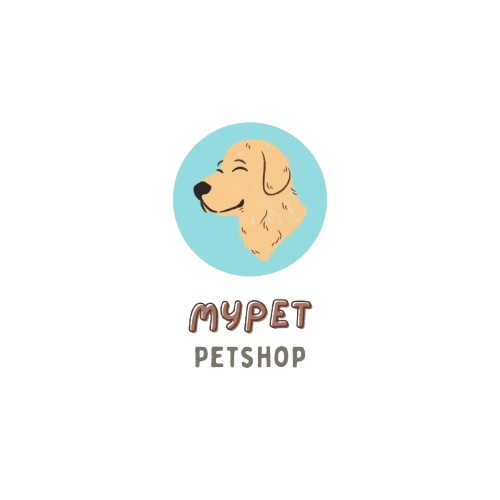
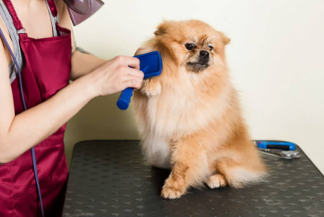
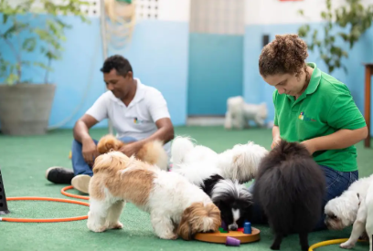

Aqui no MyPet, a saúde do seu pet é o mais importante para nós.
Oferecemos recursos e serviços para servir ao seu animalzinho e ajudar no que ele precisar!
Acesse Também:
Confira nossos serviços:


Para saber como cuidar do pet em casa, acesse também:
Cuidados com seus pets